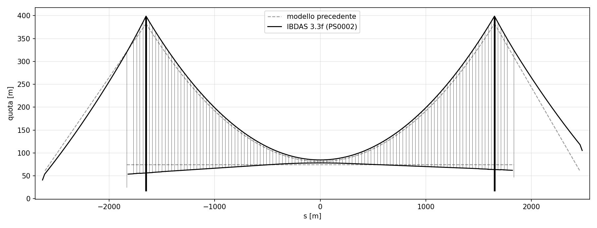
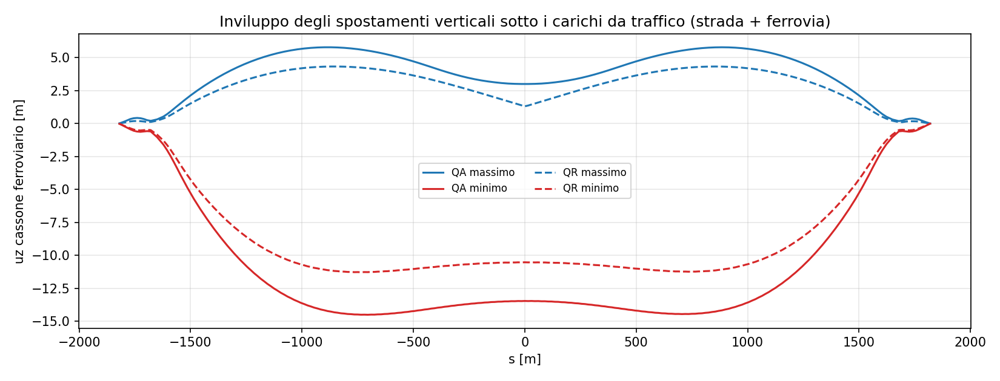
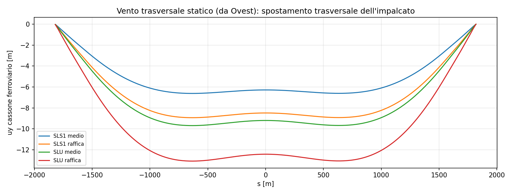
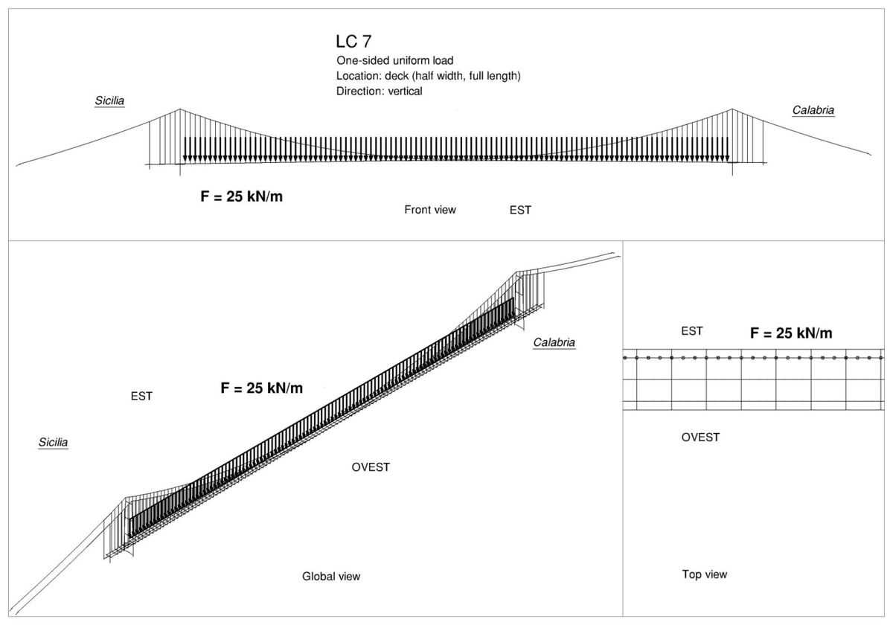
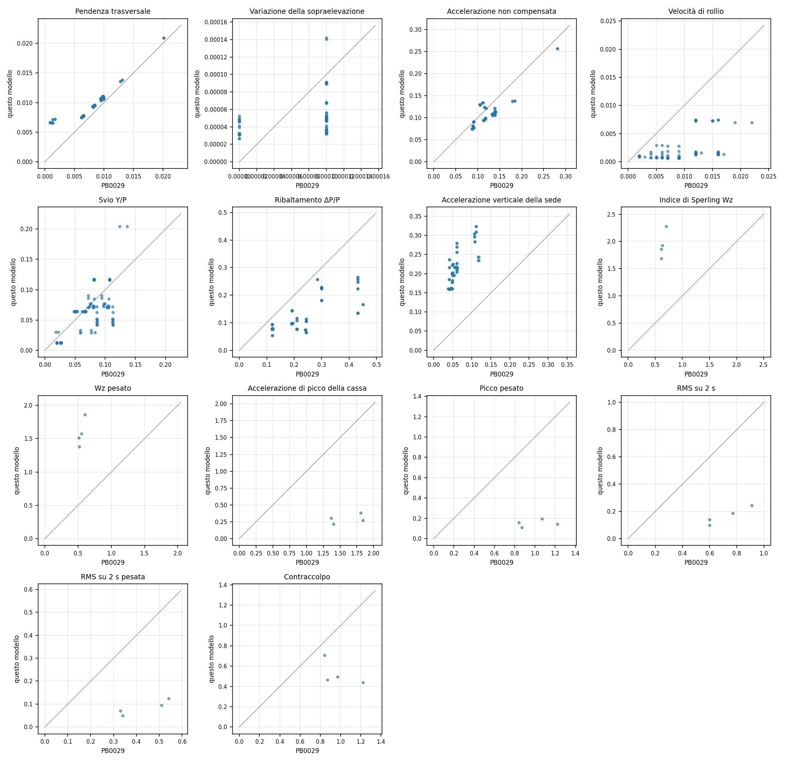
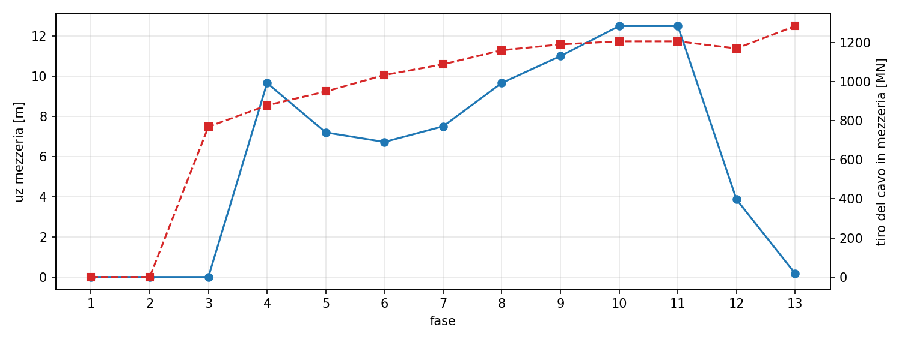

Il Ponte sullo Stretto di Messina, in un modello a elementi finiti.
Ricostruzione 3D dell'intera opera dal Progetto Definitivo del 2011: impalcato a tre cassoni, cavi e pendini non lineari, torri, carichi mobili stradali e ferroviari, vento, transito dei treni e fasi di montaggio. Ogni risultato è confrontato con quello del progetto.
Dalle tabelle del progetto a un modello che si può usare.
Il modello nasce dal modello IBDAS 3.3f e dalle tavole quotate dell'impalcato, ed è costruito passo dopo passo misurando ogni passo contro i risultati IBDAS. Tutto a elementi trave, più cavi e pendini.
Impalcato a tre cassoni
Due cassoni stradali laterali e il cassone ferroviario centrale, a sezione variabile. Il cassone stradale è costruito dalla tavola quotata, lamiera per lamiera, con i 117 traversi dei pendini a nodi condivisi.
Sezioni e traversi →Cavi e pendini non lineari
Un cavo per lato e 119 pendini ogni 30 m, con lunghezza a riposo dai tiri del progetto. Lo stato di riferimento trova da sé la controfreccia delle torri.
Stato di riferimento →Torri, selle, fondazioni
Gambe a sezione variabile con pareti interne, tre traversi di torre, selle di deviazione a cerniera, strutture terminali, viadotti di approccio e vincoli.
Vincoli e parti secondarie →Dai permanenti al transito dei treni.
Ogni azione ha la sua pagina con i dati, il metodo e il confronto con il progetto. Qui i risultati principali.
Permanenti
I pesi strutturali e non strutturali (casi PP e PN di PS0002) sono applicati voce per voce e tarati sui tiri dei pendini del progetto. Con i permanenti il modello trova la forma di equilibrio di cavi e torri.

Carichi da traffico
Strada e ferrovia secondo PG0024: carico addensato QA per la capacità portante, rarefatto QR per la deformabilità. Si usano le linee d'influenza sulla rigidezza tangente dello stato di riferimento, e le disposizioni peggiori si rifanno in non lineare.

Vento statico
Profilo logaritmico di PG0024, coefficienti aerodinamici dell'appendice G di PS0002, quattro livelli e cinque direzioni: trasversale, a 45 gradi e lungo l'asse, nei due versi.

Casi di validazione di PS0005
Dieci casi statici calcolati da IBDAS nella relazione di validazione. Per ognuno: lo schema del carico del progetto, il carico come è applicato in feagent e tutte le grandezze riportate, modello contro IBDAS.
| Caso | Cavo mezzeria uz [m] | Tiro mezzeria [MN] |
|---|---|---|
| LC1 · 2 × 5000 kN | −1,05 | −1,16 | +8,8 | +9,2 |
| LC7 · 25 kN/m | −2,49 | −2,84 | +81,0 | +82,5 |
| LC9 · 10 kN/m trasv. | +0,3 | +0,6 | |
| LC10 · 3 × 25 kN/m | −2,24 | −2,46 | +71,4 | +74,0 |
feagent | IBDAS. Tiri entro il 2-4 %, spostamento trasversale entro il 6 %.
Tutti i casi, input e output → Casi e combinazioni →
Transito dinamico dei treni
Analisi al passo dei sei treni reali RFI sul modello globale, con ponte e veicoli accoppiati, integrazione HHT e i criteri di percorribilità, sicurezza e comfort della relazione del progetto.

Fasi costruttive
Analisi non lineare per fasi del montaggio, dalle torri e dai cavi fino ai permanenti portati: 13 fasi dalla verifica di montaggio del progetto. Si confronta lo stato finale con e senza fasi.

Numero per numero, contro il progetto.
Lo scopo è un modello che rispecchi quello della documentazione. Ogni passo si misura contro i risultati IBDAS 3.3f, e quello che ancora non torna è dichiarato.
Tiri dei cavi, permanenti
| Punto | feagent [MN] | IBDAS [MN] | Scarto |
|---|---|---|---|
| mezzeria | 1 291 | 1 289 | +0,1 % |
| sella, centrale | 1 384 | 1 383 | +0,1 % |
| sella, laterale | 1 407 | 1 417 | −0,7 % |
| ancoraggio Sicilia | 1 328 | 1 341 | −0,9 % |
Modi propri
| Modo | feagent [Hz] | IBDAS [Hz] | Scarto |
|---|---|---|---|
| 1° trasversale | 0,0296 | 0,030 | −1,3 % |
| 1° verticale antisim. | 0,0504 | 0,055 | −8,3 % |
| longitudinale | 0,0647 | 0,065 | −0,5 % |
| 1° verticale sim. | 0,0804 | 0,081 | −0,7 % |
Punti ancora aperti: il modo verticale antisimmetrico, l'abbassamento in mezzeria sotto i permanenti e i pendini vicino alle torri. Elenco completo →
Documentazione completa.
Fonti, riferimenti, geometria, sezioni dalle tavole, carichi, vincoli, risultati e punti aperti, fino agli script per rifare tutto.